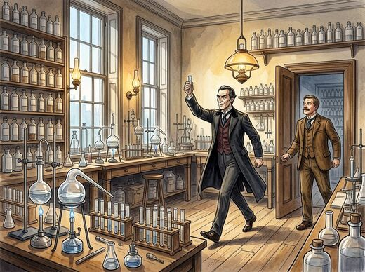
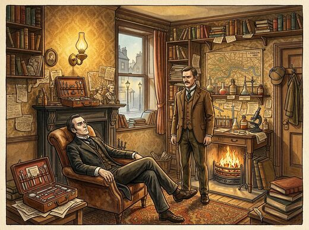
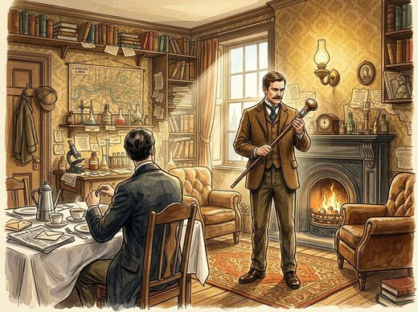
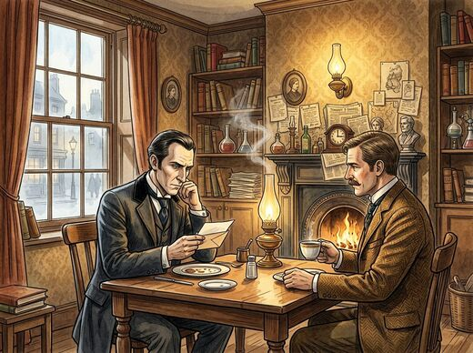
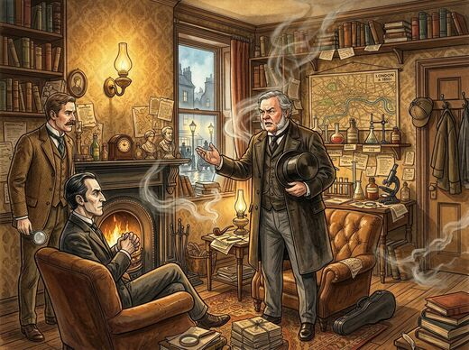

The complete original canon by Sir Arthur Conan Doyle — every novel and story collection, newly illustrated.
9 books · 3,389 pages · 264 original illustrations

Where it all begins: Watson meets Holmes, and the word “RACHE” is scrawled in blood.
222 pages · 22 illustrations

A stolen treasure, a one-legged man, and Miss Mary Morstan.
216 pages · 19 illustrations
12 stories, including “A Scandal in Bohemia” and “The Speckled Band”.
534 pages · 39 illustrations
Ends at the Reichenbach Falls with “The Final Problem”.
485 pages · 40 illustrations

A spectral hound stalks the moors of Devonshire.
300 pages · 20 illustrations
13 stories — Holmes comes back in “The Empty House”.
555 pages · 42 illustrations

A cipher warning arrives too late for the master of Birlstone Manor.
315 pages · 18 illustrations

Later reminiscences, closing with Holmes’s wartime farewell.
309 pages · 24 illustrations
The final 12 stories of the canon.
453 pages · 40 illustrations